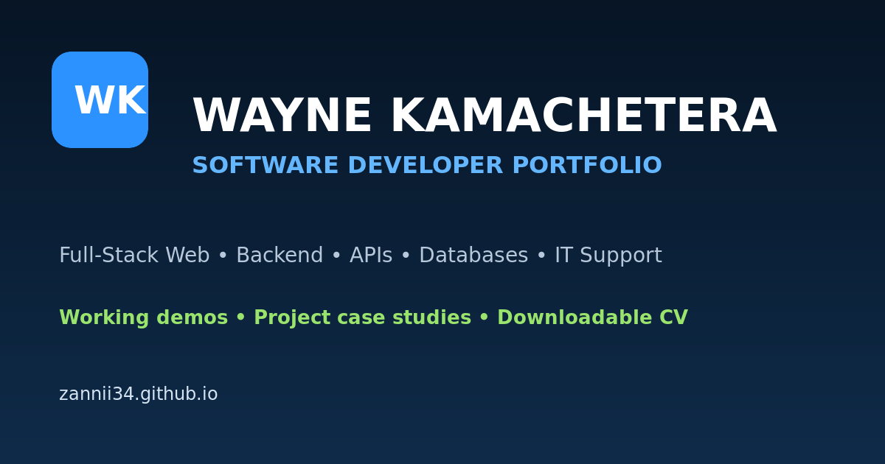

The goal
Present a broad mix of website, API, full-stack, support and algorithm work without making visitors search through repositories to find evidence.
A responsive portfolio designed and developed to help employers and website clients evaluate live work quickly, understand my contribution and contact me without friction.

Present a broad mix of website, API, full-stack, support and algorithm work without making visitors search through repositories to find evidence.
I created a custom visual system with focused navigation, project filters, live demos, plain-language case studies, responsive layouts and direct contact options.
I kept the public site static and dependency-light for fast loading, straightforward maintenance and reliable GitHub Pages hosting.
The site now leads with relevant website work, distinguishes live production work from concept demos, protects personal documents and gives prospective clients a clear next step.